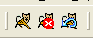
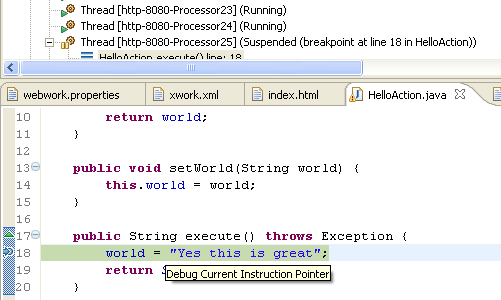

Introduction
When I started using the framework, I went through the trouble of setting up my development environment to cater for web development. What I wanted was a fast turn-around time. If I changed a .jsp file, I could just refresh the web browser to see the changes. Also changes in related configurations will have immediate effect. And finally minor Java changes from within Eclipse is also hot replaced.
I will document how to setup Eclipse and install a Tomcat plugin so all is integrated within Eclipse and you can easily start, stop, restart Tomcat, see output in the Eclipse console, debug, make code changes on the fly, etc. etc. so development is a joy.
If you are fortunate enough to use the JetBrains IDEA editor then all this is already setup for you.
Preface
I used these tools:
- Windows XP
- Eclipse 3.11
- Tomcat 5.5.x
- Sysdeo Tomcat Plugin Launcher 0.80
Install Tomcat Plugin
There are several Tomcat plugins to Eclipse, and I tried several versions. I found that Sysdeo was the best one for my needs.
There is a good Eclipse plugin homepage at http://www.eclipse-plugins.info
Download the Sysdeo plugin from its homepage at http://www.sysdeo.com/eclipse/tomcatplugin
Unzip the downloaded file to <ECLIPSE_HOME>\plugins
Installing Tomcat
If you don't have Tomcat installed then download it from http://tomcat.apache.org
Configure Tomcat Plugin in Eclipse
Restart/Start Eclips so the plugin is loaded.
If the plugin is working you will immediately notice three new icons in the Eclipse toolbar 
These icons are for starting, stopping and restarting Tomcat.
Now you need to configure the plugin Windows -> Preference. And the select the Tomcat tab.
Here you select the Tomcat version to 5.x and enter the <TOMCAT_HOME> folder. You leave Context declaration mode to server.xml.
Leave the advanced tab as default. JVM Settings should have a JRE selected. And the source path should have ticked Automatically compute source path.
Create a New Project
When you create a new project in Eclipse, your folders follow a certain structure standard to make this work.
I have this folder structure
<project_home>
+ src
+ java
+ webapp
+ WEB-INF
+ lib
In the lib folder copy your needed .jar files. I have these files:
- commons-logging.jar
- dwr.jar
- freemarker.jar
- javamail.jar
- log4j-1.2.9.jar
- ognl.jar
- oscore.jar
- rife-continuations.jar
- servletapi.jar
- spring.jar
- webwork-2.2.1.jar
- xwork.jar
And in WEB-INF your should have web.xml and the Spring configuration file. And if you use Spring log4j ConfigListener you could also store log4j.properties here. I have these three files:
- applicationContext.xml
- log4j.properties
- web.xml
The spring configuration file is basically empty to start with ApplicationContext.xml.
<?xml version="1.0" encoding="UTF-8"?> <!DOCTYPE beans PUBLIC "-//SPRING//DTD BEAN//EN" "http://www.springframework.org/dtd/spring-beans.dtd"> <beans default-autowire="autodetect"> </beans>
And the web.xml
<?xml version="1.0" encoding="ISO-8859-1"?> <!DOCTYPE web-app PUBLIC "-//Sun Microsystems, Inc.//DTD Web Application 2.3//EN" "http://java.sun.com/dtd/web-app_2_3.dtd"> <web-app> <context-param> <param-name>log4jConfigLocation</param-name> <param-value>/WEB-INF/log4j.properties</param-value> </context-param> <filter> <filter-name>webwork</filter-name> <filter-class>com.opensymphony.webwork.dispatcher.FilterDispatcher</filter-class> </filter> <filter-mapping> <filter-name>webwork</filter-name> <url-pattern>/*</url-pattern> </filter-mapping> <listener> <listener-class>org.springframework.web.context.ContextLoaderListener</listener-class> </listener> <listener> <listener-class>org.springframework.web.util.Log4jConfigListener</listener-class> </listener> <servlet> <servlet-name>freemarker</servlet-name> <servlet-class>com.opensymphony.webwork.views.freemarker.FreemarkerServlet</servlet-class> </servlet> <servlet-mapping> <servlet-name>freemarker</servlet-name> <url-pattern>*.ftl</url-pattern> </servlet-mapping> <welcome-file-list> <welcome-file>index.jsp</welcome-file> <welcome-file>index.html</welcome-file> </welcome-file-list> </web-app>
And my log4j.properties
log4j.rootLogger=INFO, console
log4j.appender.console=org.apache.log4j.ConsoleAppender
log4j.appender.console.layout=org.apache.log4j.PatternLayout
log4j.appender.console.layout.ConversionPattern=%d{dd MMM yyyy HH:mm:ss} %-5p %c - %m%n
#log4j.category.org.springframework=DEBUG
#log4j.category.com.opensymphony.webwork=DEBUG
#log4j.category.com.opensymphony.xwork=DEBUG
Now the tricky part is that we still need some configuration files for the framework that usually resides in the classpath folder. These files we must store outside the webapp folder due Eclipse hot Java code deployer. So these files:
- webwork.properties
- xwork.xml
Is stored in the src/java folder.
This is my webwork.properties that is setup for development
webwork.objectFactory = spring webwork.devMode = true webwork.configuration.xml.reload = true webwork.url.http.port = 8080
And then the xwork.xml where we configure our action
<!DOCTYPE xwork PUBLIC "-//OpenSymphony Group//XWork 1.1.1//EN" "http://www.opensymphony.com/xwork/xwork-1.1.1.dtd"> <xwork> <include file="webwork-default.xml"/> <package name="default" extends="webwork-default"> </package> </xwork>
Now we are nearly ready. We must tell Eclipse to output the compiled source files to webapp/WEB-INF/classes. This is done by Project -> Properties. Then select the Java Build Path tab. Then type "<project_name>webapp/WEB-INF/classes" in the default output folder. Then Eclipse would put the compiled source files to our web app classes folder AND also copy all other configuration files within the src/java folder, and thus also our webwork.properties and xwork.xml is copied.
It is important to put webwork.properties and xwork.xml in the src/java folder as Eclipse will automatically clean the build source folder when it compiles. So if we put webwork.properties and xwork.xml in the WEB-INF/classes folder Eclipse will delete them. That is why we put the files in src/java instead.
Now we are done configuring and setup our development environment in Eclipse. Now let's test it.
Now let's make the famous Hello World and se code changes on the fly 
In the webapp folder we could create a welcome page to see if Tomcat works. So we create a index.html file
<html> <body> <h1>Hello World</h1> <p/> </body> </html>
Now we are readt to start Tomcat so click the icon Start Tomcat. If everyting works you will se Tomcat startup and output in the console panel in Eclipse. Now point your webbrowser to the url http://localhost:8080 . And the welcome page should be displayed.
. And the welcome page should be displayed.
Next we create a simple action named HelloAction
package dk.claus; import com.opensymphony.xwork.ActionSupport; public class HelloAction extends ActionSupport { private String world; public String getWorld() { return world; } public void setWorld(String world) { this.world = world; } public String execute() throws Exception { world = "Hello World from your Action"; return SUCCESS; } }
So we must change our xwork.properties to know this action
<!DOCTYPE xwork PUBLIC "-//OpenSymphony Group//XWork 1.1.1//EN" "http://www.opensymphony.com/xwork/xwork-1.1.1.dtd"> <xwork> <include file="webwork-default.xml"/> <package name="default" extends="webwork-default"> <action name="hello" class="dk.claus.HelloAction"> <result name="success">hello.jsp</result> </action> </package> </xwork>
And then we need to have a link on our welcome page, so we change it:
<html>
<body>
<h1>Hello World</h1>
<p/>
<a xhref="hello.action">Hello World Action</a>
</body>
</html>
And finally we must make a result page for the action, so we create a hello.jsp page.
<%@ taglib uri="/webwork" prefix="ww"%> <html> <body> <h1>This is hello world action</h1> <p/> What did the action say? <ww:property value="world"/> </body> </html>
Now save all these files and refresh your browser. The welcome page should now contain the link. Clicking the link would execute your action and show the result page.
Now change the code in the action by changing the world text to something different. Save the file and refresh the browser. Isn't this great 
Hope this guide can help you setup a development environment that is trouly a joy to work with.
Stopping Tomcat
You must remember to use the 'Stop Tomcat' toolbar button. If you kill the application using the red terminate button in Eclipse you could potentially have Eclipse stop responding. This happened for me twice.
Hot Code Replace Failed
If you add, rename or delete methods Eclipse can't replace the code and you will get a warning dialog. Here you should remember to click 'Continue' and then click the Stop Tomcat button (or Restart Tomcat button). This ensure that Tomcat is properly shutdown.
Debugging
Not a problem at all. Just set a breakpoint in your code and you are off to go. That is truly a joy and that can't be easiler.
and that can't be easiler.

The end
I hope this guide added something to the table. I decided I wanted to create this guide on this wiki site to contribute something back to this great web framework.